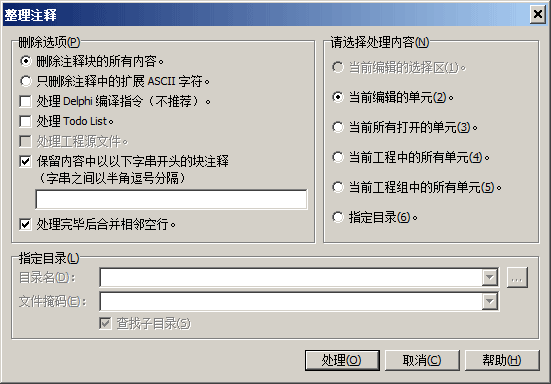
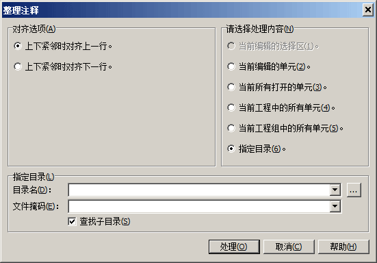

| 註釋整理專家 |
註釋整理專家
該專家提供兩個子菜單項，用於整理 Pascal/C/C++ 源文件中的註釋：刪除註釋和對齊註釋塊。
刪除註釋
該功能用於刪除單元文件中的註釋。運行後彈出的對話框如圖所示：

處理內容選擇
該部分可供用戶選擇要處理的對象：
當前編輯的選擇區：刪除當前編輯區中選中部分的註釋。
當前編輯的單元：刪除當前編輯單元中的註釋。
當前所有打開的單元：刪除當前所有打開單元中的註釋。
當前工程中的所有單元：刪除當前工程中的所有單元中的註釋。
當前工程組中的所有單元：刪除當前工程組中的所有單元中的註釋。
指定目錄：刪除指定目錄下指定文件的註釋。如選中此選項，則可在「指定目錄」中設置要處理的目錄名、文件掩碼以及搜索時是否包括子目錄等選項。
處理選項
該部分供用戶設置刪除註釋時的處理選項：
刪除註釋塊的所有內容：處理註釋時，刪除被處理註釋的所有內容，包括註釋塊本身。
只刪除註釋中的擴展 ASCII 字符：處理註釋時，只刪除註釋中的擴展 ASCII 字符，也就是刪除全角字符，註釋塊本身不被刪除。一般用於代碼移植到英文平台時的處理。
處理 Delphi 編譯指令：此選項只在 Delphi 中有效。選中此選項後，編譯指令也被當作註釋來進行處理，一般不推薦這種選擇，因為可能會影響到代碼編譯。
處理 Todo List：選中此選項後，代碼中的 Todo List 也被當作註釋處理的對象來進行處理。
處理項目源文件：選中此選項後，項目源文件中的註釋也將被處理。
保留以內容中以下字串開頭的塊註釋：選中此選項後，代碼中的塊註釋（Delphi 中的{ } 和 BCB 中的 /* */ ）內容的開頭部分出現編輯框中的字符串之一時，該註釋不會被進行處理。不同的字符串以半角逗號進行分隔。舉例說明：如果保留編輯框輸入的內容是「*,(*,*),#」，則 Delphi 中，不會被處理的註釋包括{*...}、{(*...}、{*)...} 和 {#...} 四種形式（不支持 (*...*) 形式的註釋保留）。該項是為了方便用戶自定義保留需要的註釋。
處理完畢後合併相鄰空行：大塊註釋處理完畢後，源碼中往往會留下大量空行，選中此選項可將源碼中的連續空行合併為一行以減少空行數。
對齊註釋塊
該功能用於將源碼中獨立成行的註釋塊，對齊到相鄰代碼行的縮進位置。運行後彈出的對話框如圖所示：

處理範圍選項（當前選擇區、當前單元、所有打開的單元等）及指定目錄設置與上述"刪除註釋"功能相同，此處不再重複。
對齊選項
整行註釋是指去除首尾空格後，內容完全是註釋的行（//...、{...}、(*...*) 或 /*...*/）。連續的整行註釋行構成一個註釋塊。對齊規則如下：
若註釋塊緊鄰前一行為非註釋代碼行，後一行為空行（或文件末尾），則將註釋塊對齊到前一行的縮進。
若註釋塊緊鄰後一行為非註釋代碼行，前一行為空行（或文件開頭），則將註釋塊對齊到後一行的縮進。
若註釋塊前後均緊鄰非註釋代碼行（兩側均無空行），則由以下選項決定對齊方式：
行註釋上下均相鄰時對齊上一行：將註釋塊對齊到前一行的縮進。
行註釋上下均相鄰時對齊下一行：將註釋塊對齊到後一行的縮進。
相關主題